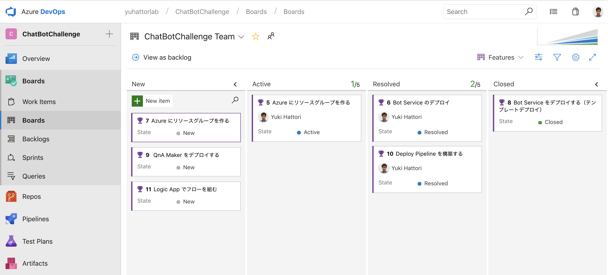

class: center, middle # Microsoft Hackathon Program Azure AppDev TSP --- class: middle ### ハッカソン #### Session 1 - アイディエーション (必要であれば) : 30分 - Azure DevOps について Azure について (Microsoft セッション) - 20 分程度 - 要件定義とアーキテクチャリング : 40-50分 - カンバンにタスクを書き出し 30分 - 発表とディスカッション : 30分 (2.5 h 程度) #### Session 2 - Option 1 : ハックチャレンジ - 構築済みのパイプラインを元に実際のソリューションを組み立てる - 3 h 程度 - Option 2 : ハッカソン - Session 1 のを実現可能なメンバーが集まっている場合にはそのソリューション自体をAzure DevOps を使いながら 組み立てます。 - 半日 ~ 2 日程度 --- ### ハックチャレンジの例 (参考までに) #### インフラエンジニア向けBot チャレンジ - Web App Bot をデプロイする - QnA Maker をデプロイする - Bot Service と QnA Maker をつなげる - Logic App でリクエストデータを登録する - リソースグループに RBAC の権限をつける - Application Insights をデプロイしてログを監視する - Application の Web View を HTML で作成 - CI/CD のパイプラインを構築する - CI/CD パイプラインに、Approver を追加 - ビルドを走らせ、無事リリースできることを確認 --- ### ハックチャレンジの例 (参考までに) #### アプリケーションエンジニア向け Bot チャレンジ - Web App Bot をデプロイする - QnA Maker を登録 - QnA Maker の自動更新プログラムを Functions / Logic Appsで実装 - 画像のアップロード機能を実装 - Cognitive Service をデプロイ - アップロードした画像を Cognitive Service で接続して、顔判別機能を実装 - Web App Bot で動くかテスト - アプリケーションの CI/CD パイプラインを構築する --- 